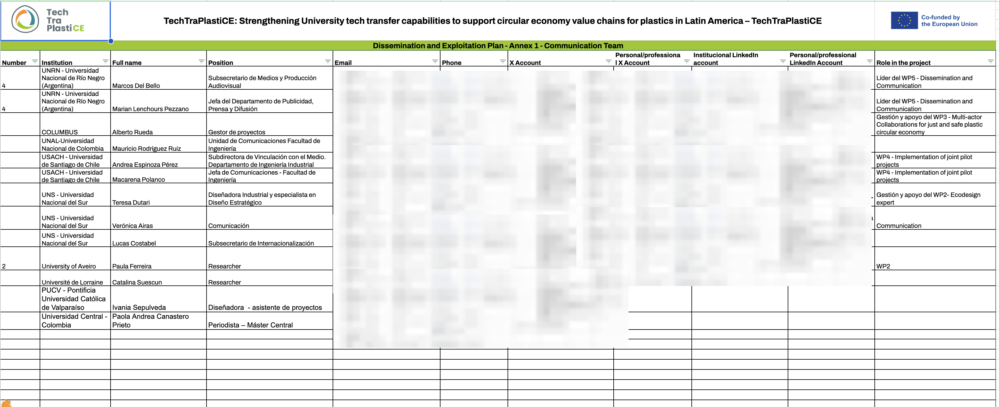
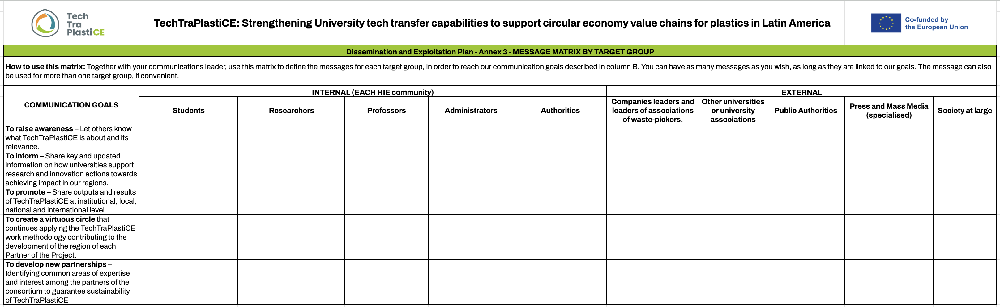
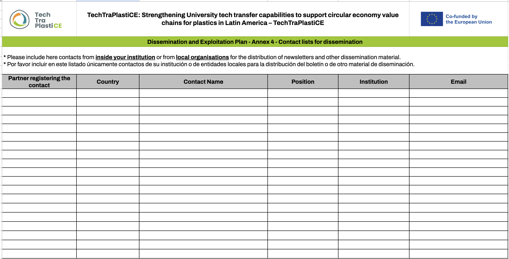
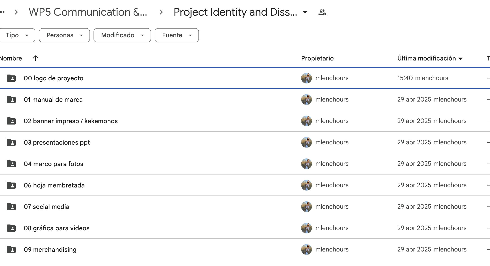
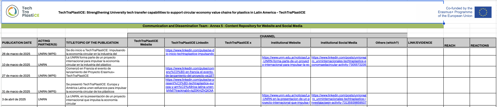

| ACTION OR ACTIVITY | TARGET | CHANNELS | WHEN | WHO |
|---|---|---|---|---|
| Announcing the start of the project (First meeting) | 1.General Public 2.Press and General Public 3.General Public 4.Project stakeholders and others institutions | Website Press Social Media Newsletter 01 | Feb. 2025 Feb. 2025 Feb 2025 May 2025 | WP5 leader on Project website (all parents on their institutional websites) WP5 leader at general level (all partners locally) WP5 leader with the repost of all partners WP5 leader (with the redistribution of each partner internally) |
| Communicate the Kick-Off meeting | 1.General Public 2.Press and General Public 3.General Public 4.Project stakeholders and others institutions | 1.Website 2.Press 3.Social Media 4.Newsletter 01 | 1. May 2025 2. May 2025 3.March 2025 4.May 2025 | 1.WP5 leader on Project website (all parents on their institutional websites) 2. WP5 leader at general level (all partners locally) 3.WP5 leader with the repost of all partners 4.WP5 leader (with the redistribution of each partner internally) |
| Raise awareness of the project website and social media | 1.Project stakeholders and others institutions. 2.General Public 3.Project stakeholders and others institutions | 1.Brochure distribution 2.Social Media and mailing Campaign 3. Neswletter 01 | 1.May 2025 2.June 2025 3.May 2025 | 1.All partners 2.WP5 leader with the repost of all partners 3.WP5 leader (with the redistribution of each partner internally) |
| Promote the project: what it is, what its objective is, how it will be implemented and who participates. | 1.General Public and Potential stakeholders | 1.Social Media campaign | 1.June 2025 | 2.WP5 leader with the repost of all partners |
D5.1 Digital Strategy for Dissemination and Exploitation
Introduction
With the support of Université de Lorraine (UL) as TechTraPlastiCE Project Coordinator and the participation and colaboration of all partners, Universidad Nacional de Río Negro (UNRN) will lead Work Package 5 (WP5) - Dissemination and Communication.
This work package is supporting the TechTraPlastiCE Project throughout the whole implementation process and aims at a widespread impact. Therefore, WP5 leader, fully supported by all other partners of the project, will execute the five work areas (tasks) that involves this WP:
- Document with the digital strategy (D5.1.)
- Branding digital material and training program (D5.2)
- Website and Social Media accounts (D5.3)
- Open Digital Repository (D5.4)
- Final conference document results (D5.5)
In this document, we will address the Dissemination and Exploitation strategy of the TechTraPlastiCE Project (D.5.1), which aims to guarantee the high multiplier effect, disseminate the results of the project at institutional, local, national and international level, and ensure the visibility of EU funding. In addition, the dissemination of activities are an integral part of the project and will be carried out from the beginning of it, both internally (at the level of the institutions involved) as well as externally (locally, regionally, nationally and internationally). Hence, the purpose of this Dissemination and Exploitation Plan is to define internal and external dissemination and exploitation actions carried out within the TechTraPlastiCE project framework, and includes all the work areas (tasks) mentioned above (D.5.2, D.5.3, D.5.4 and D.5.5).
All these activities support the TechTraPlastiCE Project in the development of a coherence communication, unified appearance and the creation of the Project branding. Therefore, the digital dissemination materials and tools will be accessible at any time. One of the main difficulties in a big consortium is the distribution of communication and delivery of timely information. To this aim, partner’s training will help to ensure each partner understands its role, the channels, and the means to create accurate and proper content for the different channels. The formation of a communication team with representatives from all partners institutions will be key to ensure the correct implementation of this plan. WP5´s leader will monitor the dissemination efforts of the consortium on a regular basis.
Considering that communication is a dynamic process, WP5´s leader will regularly provide updates of the dissemination Plan according to the partners’ needs and will provide support in the organization of events from other WPs when it comes to dissemination tools and branding.
Dissemination and Exploitation within the TECHTRAPLASTICE Project
Dissemination is widely used when it comes to the promotion of EU funded projects and, for the purpose of the TechTraPlastiCE Project, it relates to make the results of TechTraPlastiCE visible to a diversity of targets. This project involve an important diversity of stakeholders, as the focus “circular economy of plastics” require a multi-level response where university/partners (and their internal communities: academics, administrative staff, students, etc) act not only as a provider of solutions but also as an orchestrator of different types of actors: waste pickers, companies, industries, policymakers and society at large, locally, nationally and globally. Relevant stakeholders will be continuously provided with updated information regarding project activities, news and events (D.5.1, D.5.2 and D.5.3).
Exploitation also refers to transferring the project’s results after its completion and providing main target groups with tools and information to expand the impact of such results. Final material will be shared with the open public (OERs) - D5.4 and D5.5
This Plan defines the strategy and organises the tasks for the dissemination of the activities and the exploitation of the results of the TechTraPlastiCE Project, maximizing its impact and ensuring the visibility of EU funding.
It is a planned process of promotion and awareness raising that will occur from the beginning and throughout the whole project. This methodological document will orientate the whole consortium, especially those who are part of the communications team.
Why is it necessary to disseminate the TechTraPlastiCE project?
Objectives:
- To raise awareness: Let others know what TechTraPlastiCE is about and its relevance.
- To inform: Educate the community about the complex challenge that plastic waste represents at a global level and how universities contribute to the circular economy in this area, by sharing key and update information of the research capacities, supporting innovation actions and technological transfers that have a positive impact in our regions.
- To promote: Share outputs and results of TechTraPlastiCE at institutional, local, national and international level.
- To create a virtuous circle that continues applying the TechTraPlastiCE work methodology contributing to the development of the region of each Partner of the Project.
- To develop new partnerships identifying common areas of expertise and interest among the partners of the consortium to guarantee sustainability of TechTraPlastiCE, and also between the universities and actors of the plastic industry.
Communication Team
Communication is always a collaborative process. Each of the TechTraPlastiCE partners will name at least one person responsible on their side as a contact for dissemination.
These contact people will be responsible for creating content, reviewing and approving dissemination materials. After the kick-off meeting, this Dissemination Plan should be reviewed and approved by these appointed people from each partner HEI to ensure understanding and commitment to the tasks defined herein. See Annex Section 3.1: Contact list for communication Team
Project Visual Identity
A logo and visual identity plan of the project, layout for presentations, documents and deliverables and other dissemination materials were created in the first three months of the project (February 2025).
WP5 leader, together with P1, participated in ideas generation activities before the kick-off meeting (March 2025) and three proposals of logo were designed and were submitted (via online) to all partners to vote and express considerations. In response to suggestions on the winning logo, a new version was presented and approved by the consortium during the first Consortium virtual meeting (28 February 2025). The final project logo and further information can be found in the Visual Identity Plan (Deliverable D.5.2).
It is essential to respect the visual identity of the project in order to communicate it with coherence and consistency. All main dissemination materials will be provided in English and Spanish to broaden the reach of all project results and impact the target groups in the Latin America region.
UE Visibility
The European Union (EU) has numerous funding programmes which support projects and initiatives in various domains across the EU and beyond. All beneficiaries, managing authorities and implementing partners of EU funding must use the EU emblem in their communication to acknowledge the support received under EU programmes and contribute to the visibility of the EU on the ground. Recipients of EU funding have a general obligation to communicate and raise EU visibility. An important obligation in this context is the correct and prominent display of the EU emblem, in combination with a simple funding statement, mentioning the EU support.
- EU Logo: Include the EU logo in all project materials and communications.
- Acknowledgment: Publicly acknowledge EU funding in press releases, reports, on the project website and on the institutional website.
- Reports: Clearly state the contribution of EU funding in the project.
- Events: Organize events targeting the general public, where EU funding and involvement are highlighted.
- Media Interviews: Engage with local and national media to showcase the project and its EU funding
Main target groups for Dissemination and Exploitation of the TECHTRAPLASTICE Project
Effective dissemination is about delivering the right message to the right person. Relevant stakeholders will be continuously provided with updated information regarding project activities, news and events. All results will be solely promoted among the partners’ national and international networks.
Levels of dissemination
As stated in the Proposal, the Dissemination and Exploitation Plan strategy consider four levels:
- Institutional level: To create awareness and branding influence within each HEI community (leaders, administrators, professors, researchers, students, etc.).
- Socio-economic actors: It refers to companies leaders, leaders of associations of waste-pickers, local public authorities interested in sustainability, plastics and circular economy, and the society at large.
- Consortium: Targeting all European and Latin-American partners
- International/Regional level: To impact other non-partners, HEIS, associations or organizations interested in the project’s objectives at international and regional level.
Target Groups
Considering the differents levels of dissemination, the main target groups of the TechTraPlatiCE project are the following:
Target group 1: Project Stakeholders
- Each HIE community (students, researchers, professors, administrators, authorities)
- Companies leaders and leaders of associations of waste-pickers.
Target group 2: Relevant Stakeholders
- Other non-partners, HEIS associations or organizations interested in the project’s objectives at international and regional level.
Target group 3: Policymakers
- Public authorities interested in sustainability at local, regional, international level
Target group 4: General Public
- Society at large and potential stakeholders
Target group 5: Press
- Press in general and media specialized in the project themes.
A matrix message will be provided in order to define the messages for each target group, reaching our communication goals described above. (See Annex Section 4 - Message Matrix)
Contacts list
Given the fact that all partners together have a large network, each partner is going to draft and keep updated a stakeholder list, in order to guarantee that dissemination activities are specifically targeted and content is adapted to the needs of the diverse target groups.
Taking into account all the existing contacts in EU and LA partner countries, promotional materials will be delivered both online and offline to the target audience and beyond. Online dissemination will be preferred for cost-efficiency reasons, but most importantly, to reduce the amount of paper used and hence, protect the environment. See Annex Section 5 - Contact list for dissemination
In the case of the “HIEs community” target, each partner institution will be responsible for sending or forwarding the content within their communities (students, researchers, professors, administrators, authorities).
Similarly, in the case of the target “Press”, each university will have to send the news to its local media contacts to ensure greater impact.
Dissemination and Exploitation channels
In order to delivering the right message to the right person, this Dissemination Plan contemplates the following channels:
A dedicated project website (D5.3)
A first version of the TechTraPlastiCE website (techtraplastice.eu) was created in February 2025 for the kick off meeting and the final version will be online within the three first months of the project (June 2025).
It will be the main platform of the project, as it will be the only one to have the most clearly structured, complete and updated public information of the project for the broad public and all target groups. The website will be actively cross-linked with other websites and platforms which add value to the TechTraPlastiCE dissemination. Further, the website will include a contact form in order to give the possibility to get in contact with the consortium whenever needed.
All communication actions -described in this Plan or not- should lead to the website for more information and to contact the project management.
The website will be updated on a monthly basis. WP5 leader will be in charge of designing, administering and keeping updated the TechTraPlastiCE website with the collaboration of all the partners. To this aim, a mensual calendar will be shared to define the content generation by each partner for NEWS and AGENDA sections. Further, given the fact that EACEA follows the concept of knowledge sharing, the most important content deliverables of the project will be uploaded after completion on the website to guarantee easy access.
Templates will be provided to send the content as it is expected, including all the kind of information needed and the requirements of the image format with the corresponding assignment of image using rights. [cf Delivrable 5.2: Visual Identity Plan and Dissemination Materials]
This Plan also considers each partner’s institutional website as channels of communication, as they will replicate content (news and events) and will also have a visible and direct link to the main website of the Project on a permanent section. See the Project Folder.
Open Digital Repository (D5.4)
An open-source repository will be included on the project website for sharing the digital materials produced in different WP, especially targeting multi-stakeholders, interactive and friendly access. All project outputs (comparative analysis, training materials, etc.) will be transformed in an Open Educational Resources (OERs) available also after project ends to access and download. The OERs derived from TechTrasPlastiCE implementation will remain public on the project’s website and linked to LA HEIs websites. Project website and social media profile will be kept up and running after the project ends, still offering learning and dissemination opportunities. Different stakeholders will be able to reach, to access and use project results.
Brochure
In order to provide detailed information to all target groups, the consortium members will establish a TechTraPlastiCE brochure. It will be designed in order to attract a high number of interested people and to be able to distinguish TechTraPlastiCE from the high number of other European projects.
Press Releases
It is expected that each partner sends news and update information to the press and specialised media.
Events
Targeted conferences, workshops and seminars for stakeholders and policymakers. Each partner should participate and disseminate the project and relevant results in Regional and European conferences to disseminate the project and its results.
To strengthen the international impact of TechTraPlatiCE’s results, project partners will take advantage of international conferences they will attend, in order to present the project’s progress and results. Search Conferences, the Final Conference (D5.3) of TechTraPlastiCE Project will be organized by UNRN on 2028 in San Carlos de Bariloche, Río Negro, Argentina- are included in this point.
One important aspect of dissemination will always be face-to-face communication with the potential target groups given the fact that this type of communication can create a much higher impact as it is connected with a higher level of emotions. Therefore, dissemination of ThecTraPlastiCE activities and results will follow the guidelines of this plan and will be operated under the responsibility and financing of each partner (co-financing and co-responsibility).
Objectives of the Strategic Training Program for Dissemination and Exploitation
All dissemination activities are included in this Dissemination and Exploitation Plan. This plan is constituted by a matrix detailing the dissemination activities into concrete single steps and tasks.
It further allocates a timeframe and deadline for performance and completion of the task. The dissemination plan allocates responsible partner organizations and persons to perform specific actions. For communication tasks the dissemination plan also specifies the means and media of communication.
Objective 1: To raise awareness
Objective 2: To informe
| ACTION OR ACTIVITY | TARGET | CHANNELS | WHEN | WHO |
|---|---|---|---|---|
| Educate the community about the project: the complex challenge that plastic waste represents at a global level and how universities contribute to the circular economy in this area (justification of the project, opinion articles on the methodology, articles on the occasion of international and national dates related to the theme of the project, etc.) | 1.General Public, UE and potential stakeholders | It depends on the format of the content. It will be distributed on the project website (News and Agenda sections), press and social media. Everything will be included in the semestral Newsletters | Throughout the project, especially during the first half of the project. | All partners should contribute with content and send it with the appropriate templates. WP5 will disseminate the content co-generated with all partners. |
| Inform about the progress of the project (meetings and agreements with stakeholders, international staff exchanges, etc.) | 1.General Public, UE and potential stakeholders | It depends on the format of the content. It will be distributed on the project website (News and Agenda sections), press and social media. Everything will be included in the semestral Newsletters | Throughout the project. | All partners should contribute with content and send it with the appropriate templates. WP5 will disseminate the content co-generated with all partners. |
| Communicate the participation of partners in international conferences, seminars and events | 1.General Public, UE and potential stakeholders | It depends on the format of the content. It will be distributed on the project website (News and Agenda sections), press and social media. Everything will be included in the semestral Newsletters | Throughout the project. | All partners should inform their dissemination activities and contribute with content and send it with the appropriate templates. WP5 will disseminate the content co-generated with all partners. |
Objective 3: To promote
| ACTION OR ACTIVITY | TARGET | CHANNELS | WHEN | WHO |
|---|---|---|---|---|
| Dissemination of each WP deliverable in a user-friendly and accessible format. | 1.General Public, UE, potential stakeholders and other institutions interested. | 1.Website 2.Social Media 3.Newsletter | As soon as the deliverable is ready to be disseminated | WP5 leader with the input of WPs leaders WP5 leader (with the redistribution of each partner internally) |
| Promotion of the repository and make the results of the project more visible | 1.General Public, UE, potential stakeholders and other institutions interested. | 1.Website 2.Social Media 3.Newsletter | As soon as the repository is online and ready to be disseminated (2027) | WP5 leader with the input of WPs leaders WP5 leader (with the redistribution of each partner internally) |
| Dissemination of Search Conferences | 1.General Public, UE, potential stakeholders, stakeholders and other institutions interested. | 1.Website 2.Press 3.Social Media 4.Newsletter | After each Search Conference | 1.WP5 leader with the input of WPs leaders (each partner internally) 2.WP5 leader (each partner locally) 3. WP5 leader with the repost of each partner 4. WP5 leader (with the redistribution of each partner internally) |
Justification and evidence of dissemination of relevant activities of TechTraPlastiCE
Every TechTraPlastiCE Partner in charge of organizing any of the activities indicated in this Dissemination Plan should be able to show upon request for dissemination and quality control, the following documentation:
- Detailed agenda of the event.
- Attendance sheet duly signed by participants.
- Certificate of attendance of each participant.
- Satisfaction surveys of each participant.
- Dissemination Report and Photos with the corresponding session of rights of use
- Minutes of the meeting (when applicable).
- Copy of the disseminated materials (when applicable).
Formats and templates will be available in Project Folder identified as WP 5 Communication & Dissemination > Project Identity & Dissemination Materials (D.5.2) (See Annex Section 6).
Summary of roles, tasks and deadlines
Conclusions
By implementing this comprehensive Dissemination and Exploitation Plan, the project aims to reach diverse audiences, maximize its impact and ensure the visibility of EU funding across various channels and platforms.
Regularly assessing and adapting these strategies based on feedback and changing project dynamics will be crucial for sustained success. This Plan and all the dissemination materials and tools will be permanent availables online in Project Folder shared with the whole consortium: WP 5 Communication & Dissemination.
Annexes
Communication Team
This online databse will be completed by all partners. Deadline: 5 May 2025

Message Matrix
To be completed by Communication Team during May 2025

Contact lists for dissemination
To be completed by the Communication Team. Deadline: 20 May 2025

Project Identity and Dissemination Materials (D5.2)
Communication ressources that will share to the consortium

Monitoring Content Repository for Website and Social Media
Monitoring of the content generation will be mapped in a specific database

Social Media (D5.3)
LinkedIn and X (@techtraplastice) were defined as the most suitable social media network for the TechTraPlastiCE Project to disseminate its results and to engage with a broader audience. A YouTube channel of the project will also be created to host all the audiovisual material of the project, which will be also linked to the website, newsletters and other social networks, as appropriate. Partners have to follow the project’s accounts, replicate the content and comment to generate interaction.
The WP5, with the collaboration of all partners, will create content considering other social media networks to be shared by the partners through their institutional accounts, such as Instagram.
6.3. E-mail: It will be the official and direct contact to the project administration (info@techtraplastice.eu). The contact form on the project website will be deliverable to this email address, that will replicate with an automatic response leading the different consortium contacts to guarantee the correct access to the information.
6.4. Digital Newsletter: A semestral email from info@techtraplastice.eu will be sent to the different targets (collaboratives contact list) to facilitate the access to update information of the project.
As stated before, TechTraPlastiCE proposes the use of technology not only to use the project’s funds efficiently but also to communicate and promote a clean campus environment at the same time. This project will run for 3 years and as a means to inform the campus community of the advance of the project, partner institutions will use current technology to provide electronic information displays rather than distributing too many paper flyers.
Publication of e-newsletters are expected to be done on a regular basis (every 6 months) also considering project calendar and main deliverables. It will be distributed via email to a database of interested people and institutions by each partner. It will also be uploaded on the TechTraPlastiCE website and social media channels.
It will include a subscription form to collect contacts of persons and institutions interested in the project.